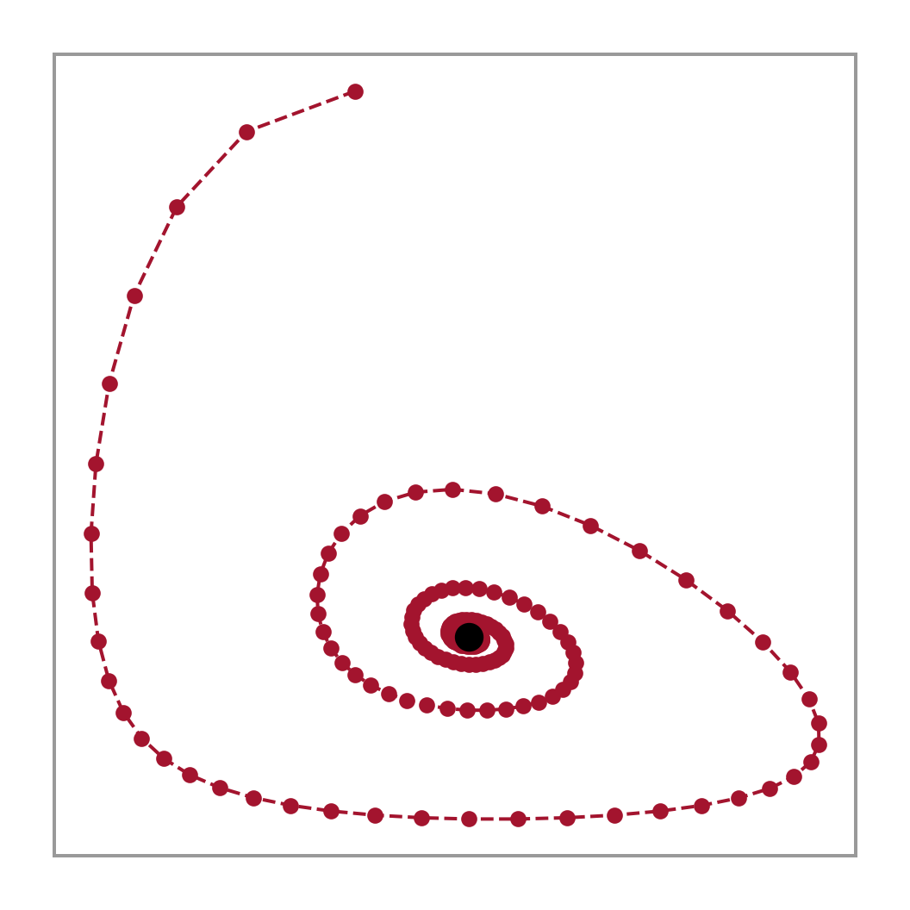
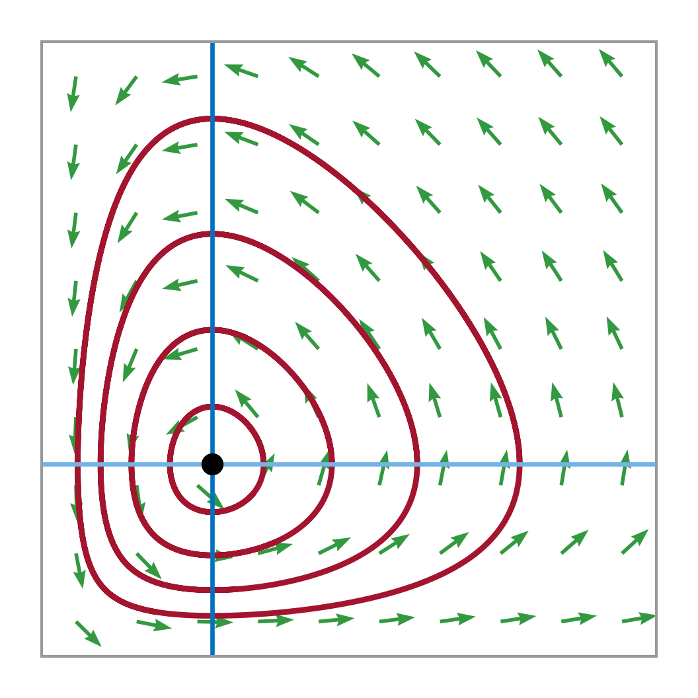

Webseite zum Buch
Dynamische Systeme in den Lebenswissenschaften
Mathematik lernt man am besten, indem man selbst rechnet. Hier finden Sie zu den Abbildungen des Buchs kurze Programme in Julia, MATLAB, Python und R. Sie simulieren die Modelle, geben Zahlenwerte aus und erzeugen die Bilder aus dem Buch.
Die Abbildungs- und Gleichungsnummern entsprechen denen im Buch. Ändern Sie Parameter und Startwerte und beobachten Sie, was passiert. Ausgewählte Apps laufen direkt im Browser, ohne Installation.




Kapitel
Kapitel 1
Diskrete dynamische Systeme mit einer Variablen
Folgen, Differenzengleichungen, logistisches Wachstum, Stabilität, Newton-Verfahren und Herzrhythmus.
6 Abschnitte · 33 Abbildungen mit Programmen · Apps
Kapitel 2
Diskrete dynamische Systeme mit mehreren Variablen
Räuber und Beute, Matrix-Modelle, Eigenwerte, das SIR-Modell und die Ausbreitung des Aktionspotentials.
5 Abschnitte · 19 Abbildungen mit Programmen · Apps
Kapitel 3
Kontinuierliche dynamische Systeme mit einer Variablen
Differentialgleichungen, exponentielles und logistisches Wachstum, Stabilität, Euler-Verfahren und Erregbarkeit von Herzzellen.
5 Abschnitte · 22 Abbildungen mit Programmen · Apps
Kapitel 4
Kontinuierliche dynamische Systeme mit mehreren Variablen
Systeme von Differentialgleichungen, Phasenebene, lineare Systeme, Michaelis-Menten-Kinetik, Stabilität und Grenzzyklen.
5 Abschnitte · 22 Abbildungen mit Programmen · Apps
Kapitel 5
Ausblick: Erregungsausbreitung im Herzgewebe
Kabelgleichung, wandernde Wellen, kreisende Erregung, Spiralwellen und Herzmodelle in drei Dimensionen.
5 Abschnitte · 5 Abbildungen mit Programmen · Apps
Julia
Julia ab Version 1.10 mit den Paketen Plots und OrdinaryDiffEq: einmalig using Pkg; Pkg.add(["Plots", "OrdinaryDiffEq"]). Programm herunterladen und in der Julia-Konsole mit include("name.jl") starten.
MATLAB und GNU Octave
Die MATLAB-Programme kommen ohne Toolboxen aus und laufen auch im kostenlosen GNU Octave. Datei in den aktuellen Ordner legen und den Namen ohne Endung eingeben.
Python
Python 3 mit den Paketen NumPy, SciPy und Matplotlib, z. B. über Anaconda oder pip install numpy scipy matplotlib. Programm herunterladen und mit python name.py starten.
R
R mit Basisgrafik; für Differentialgleichungen das Paket deSolve: einmalig install.packages("deSolve"). Programm herunterladen und mit source("name.R") in R oder RStudio starten.
Lizenz
Die Programme stehen unter der MIT-Lizenz: Sie dürfen sie frei verwenden, verändern und weitergeben, auch in eigenen Lehrveranstaltungen, solange der Copyright-Vermerk erhalten bleibt. Die Texte des Buchs sind davon nicht erfasst.
Apps
Browser-Apps stehen auf den Abschnittsseiten unter „Im Browser ausprobieren“. Die interaktiven MATLAB-Apps aus der Vorlesung können Sie dort herunterladen.